地政学
マセルは南アフリカに囲まれたレソトの首都で、カレドン川の橋が国境と生活路を兼ねます。輸入、出稼ぎ、通学、医療、外交が南ア側と結びつき、独立国の行政と周辺経済への依存が近く見えます。暮らしも動きます。
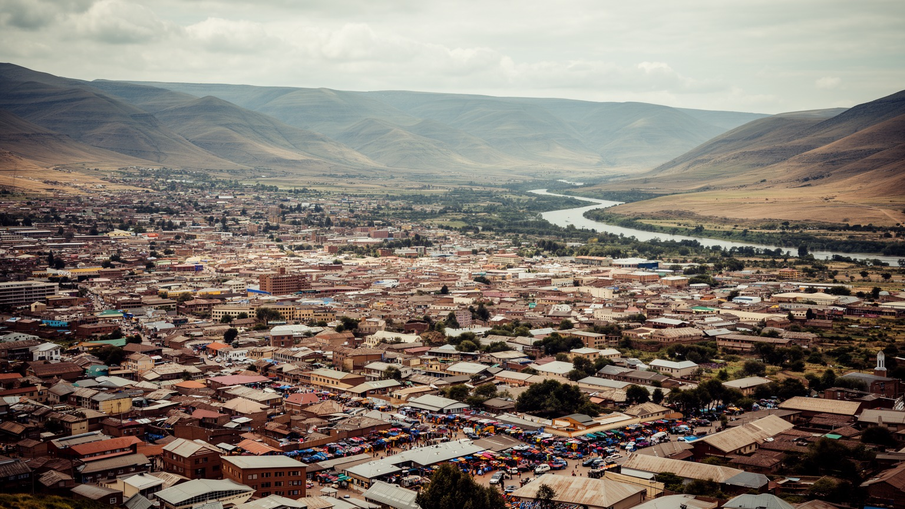
🇱🇸 レソト / マセル県 / World City Atlas
カレドン川を挟んで南アフリカと向き合う高原の首都です。王国政治、行政、繊維工場、越境商業、バソト文化、教会、山岳国家の暮らしが都市の輪郭を作ります。
国境の高原首都
マセルはレソトの行政と商業の中心であり、同時に南アフリカ経済圏へ開く玄関でもあります。橋、工場、官庁、市場、教会、丘の住宅地が、国家の自立と地域依存を同じ街路に見せます。
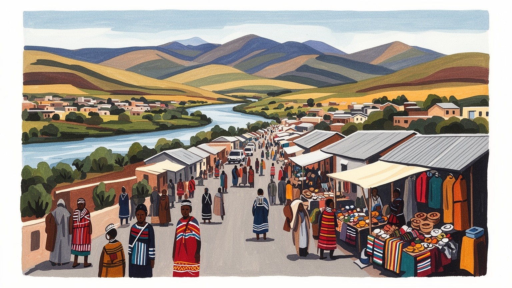
マセルは南アフリカに囲まれたレソトの首都で、カレドン川の橋が国境と生活路を兼ねます。輸入、出稼ぎ、通学、医療、外交が南ア側と結びつき、独立国の行政と周辺経済への依存が近く見えます。暮らしも動きます。
行政、繊維工場、商業、建設、物流、学校、病院が雇用を作ります。輸出縫製は女性労働を多く抱え、南ア市場や米国向け制度にも左右されます。賃金、通勤、物価は家庭の選択に直結します。家計にも強く響きます。
ソト語、バソト帽、毛布、馬文化、王室儀礼、キリスト教会が都市の背景です。日曜礼拝、合唱、葬送、学校行事、市場の会話が、山岳王国の伝統を現代の首都生活へ結んでいます。都市の若者にも静かに伝わります。
観光客は王宮、橋、市場、文化施設、タバ・ボシウ方面の歴史景観を巡ります。住民には水、家賃、交通、仕事、治安、物価が切実で、首都の便利さと高原都市の脆さが毎日交差します。生活の息遣いもよく見えます。
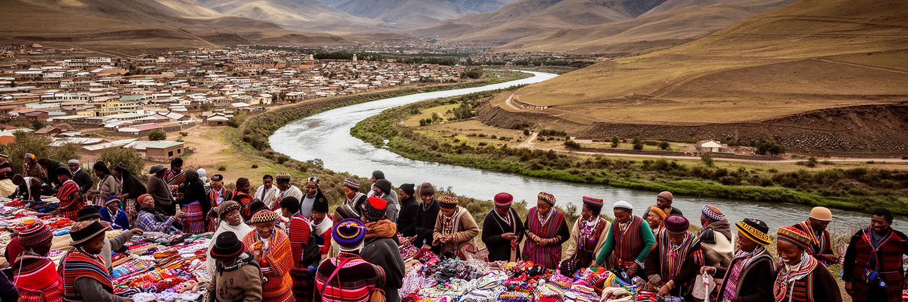
マセルはレソト西部の高原にあり、カレドン川を挟んで南アフリカのフリーステート州と向き合います。都市の位置は、山岳王国の内側に閉じた首都というより、国境に置かれた窓口です。川の橋を渡れば南ア側のレディブランドに近く、物資、通勤、医療、買い物、通学、外交実務が毎日境界を越えます。中心部には官庁、王宮、商店、銀行、市場、バスターミナルがまとまり、周辺の丘には住宅地と新しい開発が広がります。高原の標高は涼しさを与えますが、冬の冷え込み、乾いた風、夏の激しい雨、未舗装路の傷みも暮らしに響きます。谷底や川沿いの低地、丘の斜面、国境道路では、排水、洪水、交通混雑、土地の不安定さが都市計画の課題になります。マセルの地理を読むことは、レソトが山の国でありながら、経済と行政の多くを国境の平地で処理している現実を見ることです。首都の便利さは橋と道路に依存し、道路の遅れは家庭の食料、工場の出荷、病院の薬にまで波及します。美しい高原の景観の下で、国境管理と日常移動は常に同じ問題として扱われています。街の距離は短く見えても、川、坂、検問、交通費が生活時間を左右します。地方から到着するバスやタクシーもこの骨格に集まり、首都の入口は常に人の移動で満ちています。朝夕の混雑は、地形が作る細い通路に都市機能が集中していることを示します。
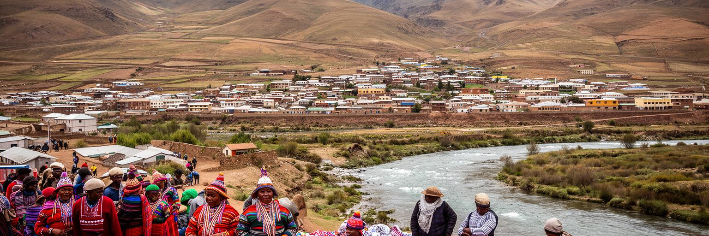
マセルは立憲君主国レソトの政治行政の中心です。王宮、政府機関、議会、裁判所、各省庁、外交窓口が市内に集まり、国家の判断が日常の道路や市場の近くで行われます。レソトの王室はバソトの歴史と国家統合を象徴し、首相や議会、行政機構は政策と予算を動かします。政治は都市の外側にある抽象的な制度ではなく、公共雇用、学校、医療、道路、水道、治安、土地手続きとして住民の生活に触れます。レソトでは政党政治の不安定さ、連立、軍や治安機関をめぐる緊張、改革の議論が繰り返され、首都はその調整の舞台にもなってきました。小国の首都では、国家機関と市民生活の距離が近いため、政治の停滞や財政の揺れが商店の売上や雇用の不安に直結しやすいです。一方、王国の儀礼、国旗、言語、学校教育、教会行事は、住民に共同体としてのまとまりも与えます。マセルを政治都市として読むには、王宮や議会の建物だけでなく、行政サービスを待つ人の列、公共部門の給与日に動く市場、改革を求める若者の声を同時に見る必要があります。制度の近さは信頼を育てる可能性であり、同時に失望が広がりやすい条件でもあります。首都の役割は権威を示すだけでなく、山岳国家の各地域へ実際のサービスを届けることです。遠い村の問題がマセルの窓口に届く時、首都は国全体の不便さも背負います。
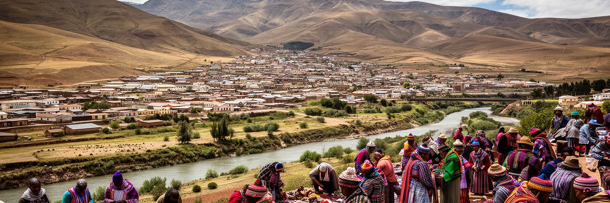
マセルの経済は南アフリカとの関係を抜きに語れません。レソトは南アフリカに囲まれ、通貨ロチはランドと連動し、食料、燃料、建材、医薬品、衣料、機械の多くが南ア経由で入ります。マセル橋は国境の象徴であると同時に、物流、通勤、買い物、留学、家族訪問の実用的な通路です。南アの鉱山や都市で働く出稼ぎの歴史は、レソトの家計、送金、男性労働、家族構造に深く影響してきました。現在も南ア側の景気、燃料価格、為替、税関、移民管理、道路事情は、マセルの物価と仕事に反映されます。国境が近いことは選択肢を増やしますが、都市の脆さも広げます。橋が混雑すれば工場の納期が遅れ、輸入品価格が上がれば市場の店先で家計が締めつけられます。若者にとって南アフリカは学校、仕事、買い物、医療の大きな可能性ですが、同時に人材流出や不安定な移住の入口でもあります。マセルの国境性は、独立国の首都が自分の制度を持ちながら、周辺大国の経済に深く組み込まれていることを示します。国境線は地図の線である前に、毎日の価格、時刻表、身分証明、荷物検査、家族の待ち時間として経験されます。橋を渡る人の流れが、首都の本当の規模を教えます。越境の近さは便利さであり、政策の失敗がすぐ生活へ届く緊張でもあります。商人は通関の時間を読み、家庭はランド建ての値段を見ながら支出を決めます。
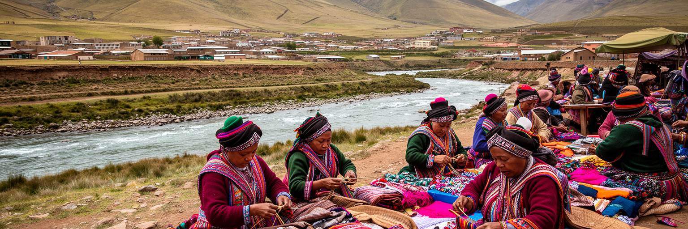
マセルの産業を理解するうえで、繊維・縫製工場は欠かせません。レソトは米国向け輸出制度や南アフリカ市場との近さを背景に、衣料品生産を発展させ、マセル周辺には工場団地と関連物流が集まりました。工場では女性労働者が大きな比率を占め、縫製、検品、梱包、清掃、食堂、通勤サービスが都市の生活を支えます。賃金は多くの家庭に現金収入をもたらしますが、長時間労働、低賃金、労働安全、組合活動、ハラスメント、保育、通勤費は切実な問題です。輸出産業は世界の需要、米国の貿易制度、南アの港湾や道路、為替、電力、発注元の判断に左右され、首都の家計も遠い市場の変化を受けます。工場が増えると周辺に食堂、露店、ミニバス、賃貸住宅が生まれ、都市の縁辺部が急ににぎわいます。一方、注文が減れば失業と借金が広がり、女性の収入に頼る家族ほど大きな打撃を受けます。マセルの工場労働を読むことは、グローバルな衣料消費が高原の首都でどのように縫われ、誰の時間と体力で支えられているかを見ることです。安い衣服の背後には、朝早い通勤、家事との両立、賃金交渉、国際基準を求める運動があります。工場の門前に集まる人々は、マセルが行政都市であるだけでなく、労働の都市でもあることを示しています。裁断台とミシンのリズムは、遠い店頭の流行と家庭の夕食を結びます。
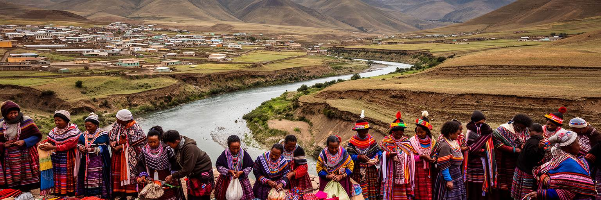
レソトは山の国であり、水の国でもあります。マセルの水道や都市環境は、高地に降る雨、河川、ダム、導水、下水処理、南アフリカへの水供給と結びついています。レソト高地水事業は、国内の水資源を南アフリカの大都市圏へ送る巨大な地域インフラで、国家収入、雇用、電力、外交、環境問題を同時に扱います。首都マセルから見ると、この水は遠い山の事業であるだけでなく、都市の蛇口、工場、病院、学校、低所得地区の共同水栓に関わる生活基盤です。乾季やインフラ故障、都市拡大、河川汚染は給水の安定を脅かします。水資源の輸出は国に収入をもたらしますが、移転を迫られた地域社会、牧草地、河川生態系、補償の問題も残します。マセルでは下水、廃棄物、排水路、洪水時の汚染が都市衛生を左右し、貧しい地区ほど影響を受けやすいです。水は豊かな自然の象徴であると同時に、政治と地域格差の問題です。山から流れる水が南アフリカの都市を支える一方、首都内部で安全な水に不安を抱く世帯があるなら、資源の価値は公平に配分されていません。マセルを読むには、高地のダムと街の蛇口を一つの制度として見る必要があります。水の管理は観光や発電の話にとどまらず、毎朝の洗濯、工場の操業、学校の衛生、病院の安全を支えています。雨季の濁りや断水の知らせは、都市の信頼を測る身近な指標にもなります。
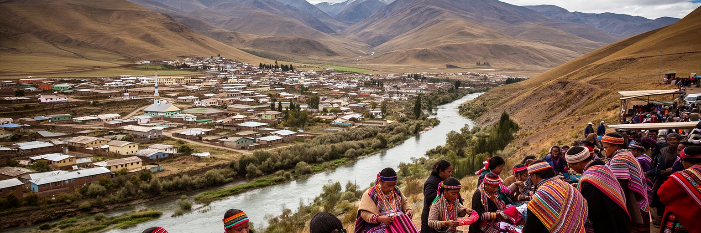
マセルの文化は、バソトの歴史、ソト語、王国の記憶、キリスト教会、家族の儀礼、音楽、服飾、馬と山のイメージに支えられています。バソト帽や毛布は観光土産としても知られますが、単なる飾りではなく、寒い高原の生活、共同体の誇り、儀礼の場面、国家の視覚的な記号を重ねています。日曜の教会、合唱、葬儀、結婚式、学校行事、政治集会、市場の会話では、都市の近代性と地域の伝統が混ざります。マセルは地方から来た人が働き、学び、手続きをする首都なので、都市の文化は農村の記憶を失うのではなく、バス乗り場、貸し部屋、教会、職場、露店で再構成されます。キリスト教は教育と医療の歴史にも関わり、信仰は福祉や相談、家族の支えとして機能します。一方、若い世代は南アフリカのメディア、スマートフォン、英語、ファッション、音楽を取り入れ、伝統との距離を自分で測っています。文化を固定した民族性として見ると、都市の変化を見落とします。マセルのバソト性は、王国の象徴と日々の生活技術が結びつく動的なものです。礼拝後に市場へ向かう人、工場の制服から毛布へ着替える人、祖先の土地と都市の家賃を同時に考える家族の中に、首都の文化は生きています。伝統は過去の展示物ではなく、厳しい経済の中で互いを支える言葉と作法でもあります。歌や挨拶の作法は、見知らぬ都市生活にも共同体の感覚を残します。
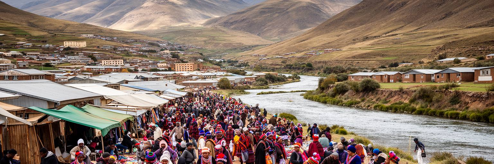
マセルの日常は、市場、ミニバス、工場の門、学校、教会、役所、貸し部屋、丘の住宅地を行き来する生活です。中心部では野菜、衣料、携帯用品、軽食、輸入品が売られ、南アフリカ側から来る商品と地元の小商いが混ざります。首都に住む利点は、仕事、学校、病院、手続き、情報に近いことですが、家賃、交通費、水道、電気、食料価格、治安の負担も重くなります。地方から来た若者や工場労働者は、中心に近い安い部屋を探し、家族への仕送りと自分の生活費の間でやりくりします。丘陵地や都市周縁では、正式な住宅と非公式な住まいが入り混じり、道路、排水、ごみ収集、公共交通の不足が生活の質を左右します。雨が降れば斜面の道はぬかるみ、乾いた季節にはほこりが店先に入ります。女性の露店、家事労働、保育、近所の貸し借りは、統計に表れにくい都市の基盤です。マセルの暮らしを読むには、首都の官庁街だけでなく、朝のミニバス待ち、給料日前の市場、停電時の店、学校帰りの子どもを見ます。都市は便利さを集めますが、その便利さを使うには現金と時間が必要です。小さな支払いの積み重ねが家計を圧迫し、仕事を失った時の脆さを大きくします。それでも市場と近所の関係は、多くの世帯が都市に踏みとどまる支えになっています。夕方の乗り場に並ぶ人の列は、首都で働くことの負担と希望を同時に映します。
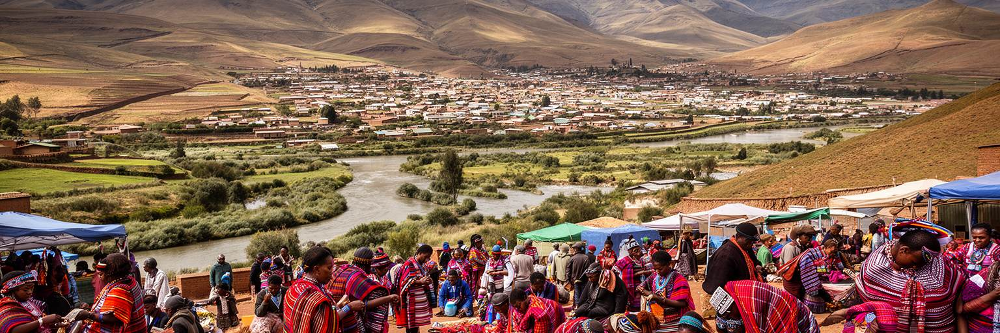
マセル観光は、都市だけで完結するより、周辺の歴史景観と組み合わせることで深くなります。市内では王宮、行政地区、カトリック教会、マーケット、工芸品店、国境橋、川沿いの景観を歩き、少し足を延ばせばタバ・ボシウの丘へ向かえます。タバ・ボシウはバソト国家の形成とモショエショエ一世の記憶に関わる重要な場所で、レソトの歴史を理解するうえで欠かせません。観光客にとってマセルは、南アフリカから入る玄関であり、山岳部へ向かう準備の街でもあります。マレツニャーネ滝、セモンコン、モホトロン方面、冬の雪景色、ポニー・トレッキングなど、高地の旅は首都の宿泊、交通、銀行、情報に支えられます。ただし観光は所得の低い地域社会と接するため、ガイド、運転手、工芸作家、宿泊施設へ適切に利益が届く仕組みが必要です。写真だけを消費する旅では、王国の歴史や生活の重みを理解できません。市場では価格交渉と敬意、教会や儀礼の場では静かな振る舞い、山岳部では天候と道路状況への注意が求められます。マセルの観光価値は、巨大な名所の量ではなく、首都、国境、王国史、高原の自然が近い距離でつながる点にあります。橋を渡って来た旅人が、丘の歴史を学び、市場で人と話し、山へ向かう時、マセルは単なる通過点ではなく、レソトを読む入口になります。短い滞在でも、地元のガイドや工芸店を選ぶことで旅の利益を街に残せます。
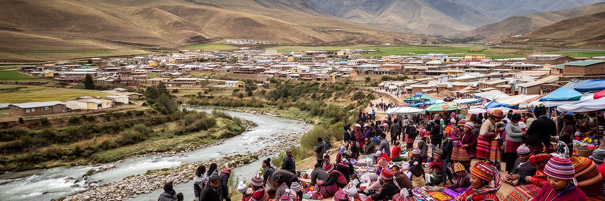
マセルには病院、学校、職業訓練、大学機能、NGO、国際機関、政府窓口が集まり、国内の他地域より支援や情報へ近い面があります。それでも健康と格差の課題は重いです。レソトはHIV、結核、栄養、母子保健、慢性疾患、メンタルヘルス、失業、若者の将来不安と長く向き合ってきました。首都では診療所や支援団体が見つかりやすい一方、通院費、薬の継続、偏見、家族の介護、仕事を休む損失が治療を難しくします。若者は教育を通じて都市へ集まりますが、卒業後の仕事は限られ、工場、警備、小売、建設、短期のサービス労働に頼る人も多いです。失業が続くと、南アフリカへの移動、非公式な商売、家族への依存、政治への不満が強まります。女性の若者には、学費、妊娠、保育、安全、職場での権利が特に大きな課題になります。マセルの社会問題を読む時、貧困を都市の外側の話として見ることはできません。官庁街から近い場所にも、家賃を払いながら親族へ送金し、病院へ通い、仕事を探す生活があります。支援制度は存在しても、信頼して相談できる距離、交通費を払える余裕、周囲の理解がなければ届きません。首都の強みは資源が集まることですが、その資源を若者と低所得世帯が使える形にすることが都市の課題です。希望と不安は同じバス停で交差しています。相談窓口の近さだけでなく、恥や費用を越えて利用できる関係づくりが必要です。
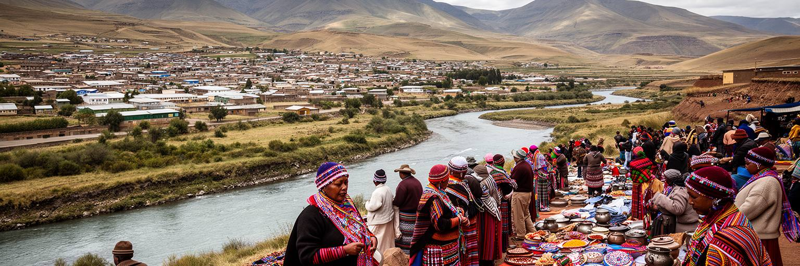
マセルの気候は高原性で、夏に雨が多く、冬は乾いて冷え込みます。この季節性は、道路、住宅、農産物流通、健康、学校生活に影響します。レソト全体では干ばつ、土壌侵食、牧草地の劣化、豪雨、霜、食料価格の上昇が大きな課題で、首都の市場にも農村の不作や輸入価格が反映されます。都市の住民は畑を持たない場合が多く、トウモロコシ粉、野菜、燃料、交通費の値上がりがすぐ家計を圧迫します。夏の強い雨は排水の弱い地区で浸水やぬかるみを生み、斜面の住宅地では土砂流出や道路損傷を招きます。冬の寒さは暖房費と呼吸器疾患に関わり、質の低い住宅ほど負担が大きいです。気候変動は雨の不安定さを強め、山岳部の農村から首都へ移る人を増やす可能性もあります。都市環境の管理は、ごみ収集、排水溝、河川の汚染、緑地、公共交通、住宅密度を一体で考える必要があります。マセルの食料安全保障は、農村政策や南アフリカからの輸入だけでなく、低所得世帯がどれだけ安定して収入を得られるかにも左右されます。気候は遠い環境問題ではなく、夕食の量、通学路の泥、工場の欠勤、病院の混雑として表れます。高原の涼しい景観を守るには、貧しい地区の排水と住宅を改善することも欠かせません。自然条件と社会格差が重なる場所に、都市環境の本当の課題があります。気象情報、排水工事、食料支援をつなぐ行政力が、首都の安全を左右します。
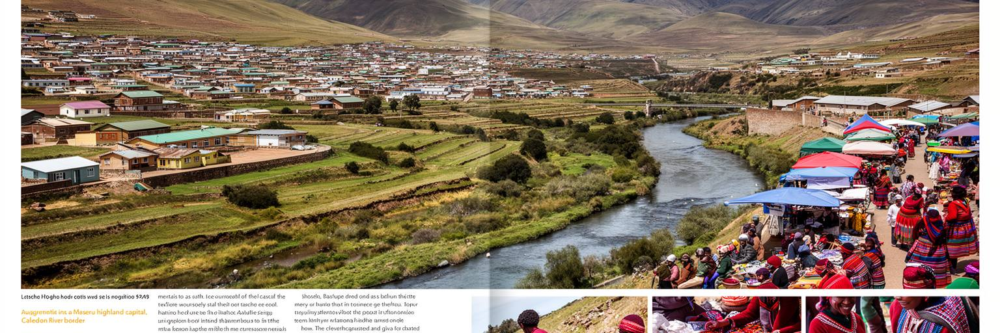
マセルを世界都市地図に置く意味は、経済規模の大きさではなく、小国の首都がどのように主権、依存、労働、文化、生活課題を同じ空間で抱えるかを見せる点にあります。ここには南アフリカと向き合う国境橋があり、王国政治の官庁街があり、輸出向けの繊維工場があり、市場とミニバスと教会があります。山岳国家の誇りは、バソト帽や毛布、ソト語、タバ・ボシウの歴史に表れますが、日常の現実は物価、仕事、水、健康、交通費、家賃という具体的な問題として現れます。マセルは大都市のような高層建築で圧倒する都市ではありません。むしろ、国境を越える経済に支えられながら独立国として制度を保ち、限られた雇用とインフラの中で住民が生活を組み立てる様子を近い距離で見せます。橋を渡る物流、工場へ向かう女性労働者、教会の合唱、官庁の窓口、市場の小さな支払い、丘の住宅地の水の問題は、すべて同じ都市の話です。マセルを読むことは、都市の重要性を金融や人口だけで測らない姿勢を持つことでもあります。小さな首都ほど、国家の制度と個人の暮らしの距離が短く、成功も失敗も見えやすいです。高原の静かな空気の中に、南部アフリカの地域秩序、グローバルな衣料生産、山岳文化、若者の未来が重なっています。首都の小さな交差点にも、山の村、南アの市場、世界の衣料棚が同時に流れ込んでいます。